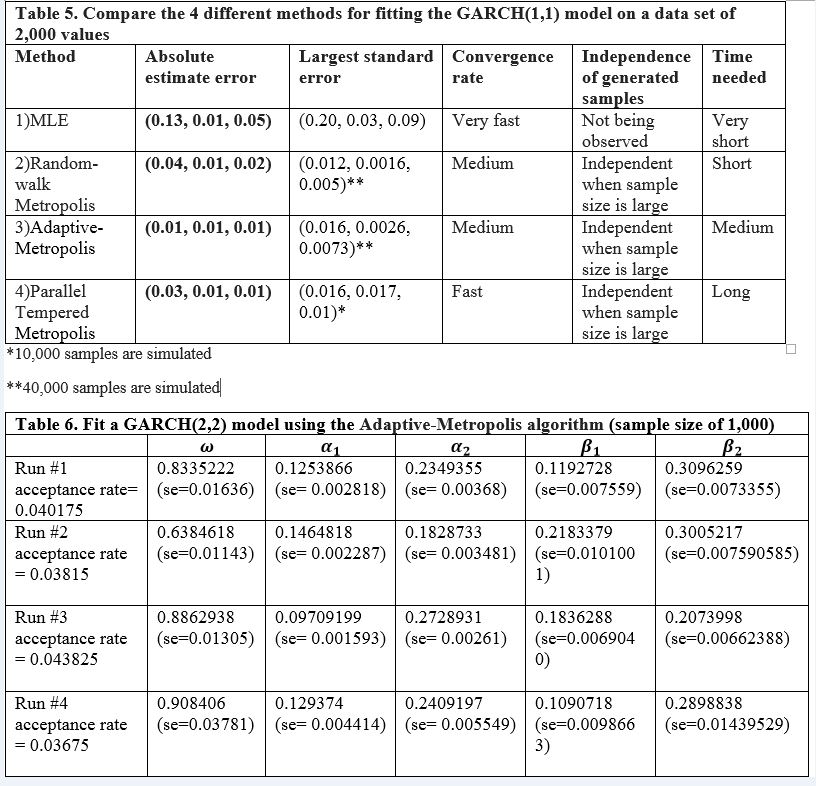
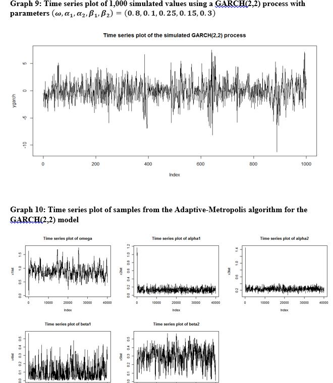
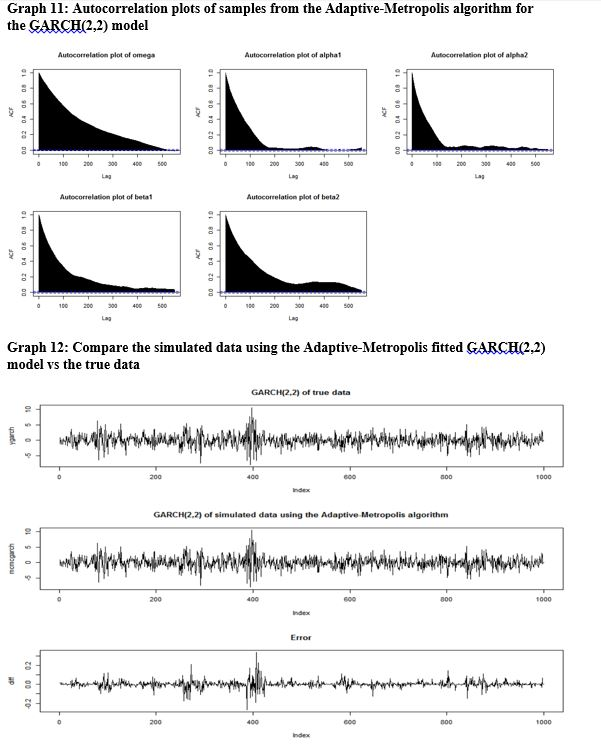

The autoregressive conditional heteroscedasticity (ARCH) model has become an important tool for modelling financial time series data, especially when the data exhibits some time-varying volatility clustering features. This project focuses on one particular category of the ARCH model, the generalized autoregressive conditional heteroscedasticity (GARCH) model, which is a popular choice in many financial econometric contexts. In particular, the project discusses how to fit a GARCH model using various Markov Chain Monte Carlo (MCMC) methods, as well as discussing the advantages and disadvantages between them and also 4 comparing them to traditional fitting approaches such as maximum likelihood estimation (MLE) methods.
Pitfalls of the maximum likelihood estimation (MLE) approach
In this project, three different types of MCMC algorithms are performed on examples of GARCH(1,1) and GARCH(2,2) models.
Both numerical and graphical analyses are used to assess the perform of each algorithm on the models. The Adaptive-Metropolis algorithm seems to perform best in both cases.
  
MCMC algorithms are very useful simulation techniques for high-dimensional computations, and are also important tools in machine learning. In this project, I only focus on random-walk MCMC algorithms due to the length of the report, another family of MCMC algorithms is the non-random walk MCMCs such as Hamiltonian MCMC and Langevin MCMC which use proposals that are more likely to be in the direction of higher probability density.
One interesting point in this project is the choice of the prior. I have chosen to use the uniform prior (which is a non-informative prior) as I have no PRIOR ideas about the parameter values. It should be noted that in this case I'm still using a Bayesian approach rather than a Frequentist approach because when I adopt a uniform prior, I am still expressing an opinion on the parameter values.
Last updated on Jan 1, 2019